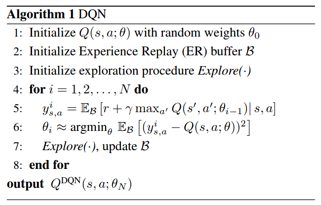

Averaged-DQN¶
Overview¶
Averaged-DQN was proposed in Averaged-DQN: Variance Reduction and Stabilization for Deep Reinforcement Learning. Averaged-DQN is a simple extension to the DQN algorithm, based on averaging previously learned Q-values estimates, which leads to a more stable training procedure and improved performance by reducing approximation error variance in the target values. Compare to the Double DQN which also tackles with overestimation proiblem, averaged-DQN tries for a different road but reaches the same goal, provides more analysis to the reason behinds.
Quick Facts¶
Averaged-DQN is a model-free and value-based RL algorithm.
Averaged-DQN only support discrete action spaces.
Averaged-DQN is an off-policy algorithm.
Usually, Averaged-DQN uses eps-greedy for exploration.
Key Equations or Key Graphs¶
The Q function update difference can be divided into three parts:
where the target network \(Q(s,a; \theta_{i})\) is the value function of DQN at iteration \(i\), \(y_{s,a}^i\) is the DQN target, and \(\hat{y}_{s,a}^i\) is the true target. Despite the optimality difference, both kinds of errors take a place in boosting overestimation.
The target approximation error (TAE) is the error when minimizling DQN loss between learned \(Q(s,a; \theta_i)\) and \(y_{s,a}^i\). It could be caused by sub-optimality of \(\theta_i\) due to the inexact minimization, the limited reprezentation power of DQN (mode error), and generalization error from unseen state-action pairs out of the finite ER buffer. Finally, it would cause a deviations from a policy to a worse one.
The overestimation error (OE) is first derived from TAE or random factors such as noise or initialization, but severely magnifies this start error by booststrap in TD updateing process. The Double DQN itackles the overestimation problem by breaking this booststrap mechanism and brings OE down.
Averaged-DQN focus on the original error TAE and try to control it into a minimum limits, which would also disadvantage the developments of OE. By averaging DQN’s results with its meta parameter \(K\) previous version, the value variance could be brought down to \(\frac{1}{K}\) of DQN’s.
Pseudo-code¶
Compared to DQN, averaged-DQN needs \(K\)-fold more forward passes through a Q-network and its previous \(K\) versions while minimizing the DQN loss (line 7), but back-propagation updates remains the same as in DQN. The output of the algorithm is the averaged over the last \(K\) previously learned Q-networks.
Extensions¶
- Averaged-DQN can be combined with:
PER (Prioritized Experience Replay)
Double (target) Network
Implementation¶
The default config of AveragedDQNPolicy is defined as follows:
The network interface AveragedDQN used is defined as follows:
- class ding.model.template.q_learning.DQN(obs_shape: int | SequenceType, action_shape: int | SequenceType, encoder_hidden_size_list: SequenceType = [128, 128, 64], dueling: bool = True, head_hidden_size: int | None = None, head_layer_num: int = 1, activation: Module | None = ReLU(), norm_type: str | None = None, dropout: float | None = None, init_bias: float | None = None)[source]
- Overview:
The neural nework structure and computation graph of Deep Q Network (DQN) algorithm, which is the most classic value-based RL algorithm for discrete action. The DQN is composed of two parts:
encoderandhead. Theencoderis used to extract the feature from various observation, and theheadis used to compute the Q value of each action dimension.- Interfaces:
__init__,forward.
Note
Current
DQNsupports two types of encoder:FCEncoderandConvEncoder, two types of head:DiscreteHeadandDuelingHead. You can customize your own encoder or head by inheriting this class.- forward(x: Tensor) Dict[source]
- Overview:
DQN forward computation graph, input observation tensor to predict q_value.
- Arguments:
x (
torch.Tensor): The input observation tensor data.
- Returns:
outputs (
Dict): The output of DQN’s forward, including q_value.
- ReturnsKeys:
logit (
torch.Tensor): Discrete Q-value output of each possible action dimension.
- Shapes:
x (
torch.Tensor): \((B, N)\), where B is batch size and N isobs_shapelogit (
torch.Tensor): \((B, M)\), where B is batch size and M isaction_shape
- Examples:
>>> model = DQN(32, 6) # arguments: 'obs_shape' and 'action_shape' >>> inputs = torch.randn(4, 32) >>> outputs = model(inputs) >>> assert isinstance(outputs, dict) and outputs['logit'].shape == torch.Size([4, 6])
Note
For consistency and compatibility, we name all the outputs of the network which are related to action selections as
logit.
Benchmark¶
Reference¶
Oron Anschel, Nir Baram, and Nahum Shimkin. 2017. Averaged-DQN: variance reduction and stabilization for deep reinforcement learning. In Proceedings of the 34th International Conference on Machine Learning - Volume 70 (ICML’17). JMLR.org, 176–185.
Mnih, Volodymyr, et al. “Human-level control through deep reinforcement learning.” nature 518.7540 (2015): 529-533.
Van Hasselt, H., Guez, A., & Silver, D. (2016, March). Deep reinforcement learning with double q-learning. In Proceedings of the AAAI conference on artificial intelligence (Vol. 30, No. 1).